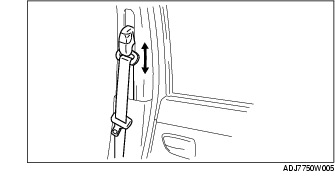
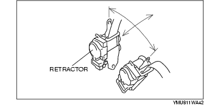
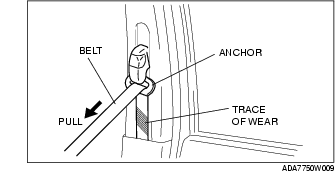

Seat belt inspection
Belt
1. Confirm that the seat belt is installed correctly.
2. Inspect the seat belt for damage and deformation of metal parts.
ELR
1. Verify that the belt can be pulled out smoothly, and that it moves smoothly when wound.

2. Verify that the retractor locks when the belt is quickly pulled.
3. Remove the retractor.
4. Make sure that the seat belt does not lock when the retractor is tilted slowly up to 15° from the mounted position and locks when the retractor is tilted 40° or more.

ALR
1. Pull the belt out fully and the lock mode changes from ELR to ALR.
2. Verify that retractor makes a clicking sound as the belt slowly retracts. If no sound is heard, the lock mode has not changed to ALR. If necessary, repeat the above Step 1.
3. Verify that the belt locks when pulled.
4. Verify that the lock mode changes to ELR when the belt fully retracts.
Load Limiter Retractor
- • When the load limiter operates, the belt and anchor rub against each other strongly leaving a trace of wear. If the seat belt is used in this state, the seat belt will not function to its designed effect and there is the possibility of serious injury to passengers. Be sure to replace the seat belt once the load limiter operates.
1. If the vehicle has been subjected to a shock in an accident, pull the belt from the retractor and confirm that there is no trace of wear (the load limiter has not operated) by visually inspecting and feeling the belt.
